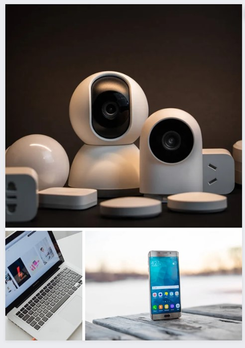

|  | El paquete "Delux" de Veloxity es la versión mejorada de sus servicios de voz y datos. Este paquete ha sido diseñado para satisfacer las necesidades de empresas y hogares que buscan una solución integral que incluye instalación de conexión de red, servicios de telefonía avanzada y un sistema de videovigilancia eficiente ahora incluido. el equipo es de ultima generacion, lo que le dara un toque sofisticado a su hogar o empresa. |
De querer personalizar o agregar objetos al paquete tendra un costo adisional de 900 a 1400 pesos segun lo que agregue
Con Veloxity, la innovación y el éxito se encuentran a solo una llamada de distancia. Acompáñenos en este emocionante viaje hacia la transformación de su negocio a través de la excelencia en comunicaciones..